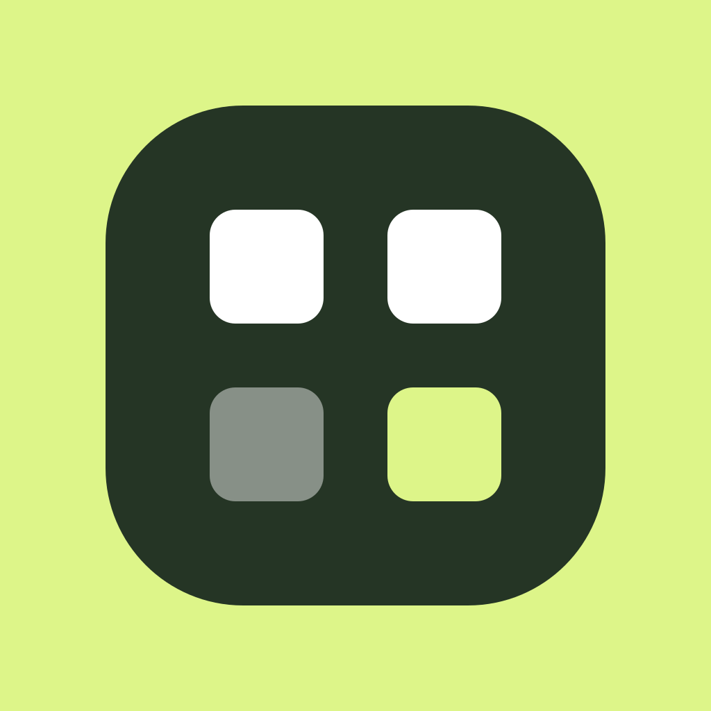

ICON DOKO / SUPPORT

アイコンどこ？
「ここに何があった？」の手がかりに。
ホーム画面を画像で記録・比較。
お問い合わせへ3ステップで使う
- 01
ホーム画面を撮影
残したいホーム画面を全ページ撮影します。フォルダの中も残す場合は、フォルダを開いて撮影してください。
- 02
画像を選んで記録
「配置を記憶する」で最大12枚を選び、名前と順番を確認して保存します。
- 03
以前と今を比較
「消えたアプリを探す」で今の画像を全ページ選びます。見つからない候補から、以前の画面を確認できます。
画像の見た目から候補を探します。アプリが削除されたと断定する機能や、配置を自動で元に戻す機能ではありません。
よくある質問
ホーム画面は自動で記録されますか？
自動撮影はしません。ご自身で撮影した画像を選んで記録します。端末に入っているアプリの一覧も取得しません。
無料版とプレミアムの違いは？
無料版は1セット保存でき、全ページからの検索は何度でも使えます。新しいセットを保存する際は、以前の記録の置き換えを確認します。プレミアムでは複数のセットを残し、好きな記録を選んで比較できます。保存数は端末の空き容量によります。
プレミアムは買い切りで、月額料金はありません。購入金額はアプリとストアの購入確認画面でご確認ください。
購入済みなのに無料版と表示されます
購入時と同じストアのアカウントを使い、「設定」→「プレミアムを見る」→「購入を復元する」を選んでください。購入の復元と、記録した画像の復元は別です。
価格が表示されない・購入できない場合は？
通信状態とストアのサインイン状態を確認し、時間をおいてアプリを開き直してください。改善しない場合は、表示されたメッセージを添えてお問い合わせください。パスワードやカード番号は不要です。
候補が多い・残っているアプリも候補になります
以前と今の全ページがそろっているか、同じ画像を重複して選んでいないかをご確認ください。壁紙、ウィジェット、アイコンのカラーテーマ、フォルダへの移動などでも結果が変わります。候補を手がかりに、端末の検索やAppライブラリでも探してください。
候補がない場合も、すべてのアプリが残っていることを保証するものではありません。
iPhoneとiPadで使えますか？
iPad対応版では、同じアプリが画面幅に合わせて表示を調整します。iPhoneは縦向き、iPadは縦・横向きで利用できます。iPadのウインドウを狭くした場合は、縦に並ぶ表示へ切り替わります。
記録は端末ごとの保存です。iPhoneとiPadの間で画像を自動同期する機能はありません。比較には、同じ端末で同じ向きに撮影した画像をおすすめします。
画像はどこに保存されますか？
選んだ画像と記録名は端末内に保存します。画像の比較と、対応ビルドでの文字認識も端末内で行います。ホーム画面の画像や読み取った文字を、開発者のサーバーや外部の画像解析サービスへ送信しません。
記録の削除・機種変更について
「記録」からセットを開き、「記録を削除」で削除できます。写真アプリにある元画像は消えません。アプリの削除では記録が失われる場合があります。本アプリ独自のクラウド同期・記録の書き出し機能はありませんので、大切な元画像を保管してください。OSのバックアップの内容は端末の設定によります。
サンプル体験は自分の記録に混ざりますか？
混ざりません。サンプルは架空のホーム画面を使います。実際に保存した記録を変更することはありません。
データの取り扱い
アイコンどこ？のプライバシーポリシーお問い合わせ
端末の機種、OSとアプリのバージョン、操作した手順、表示されたメッセージを、分かる範囲でお知らせください。
メールで問い合わせる送信先：kendmyy@gmail.com
ホーム画面の画像を添付する場合は、個人情報が写っていないかご確認ください。パスワードや決済情報は送らないでください。